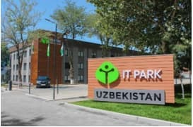

IT Park

It Park haqida
"2019-yil 24-iyulda Toshkentda O`zbekiston
Respublikasidagi birinchi IT
Park ochildi.Ushbu qisqa vaqd ichida IT Park 28 yangi startaplar
ko`rinishidagi birinchi mevalarini berdi,axborot tenalogiyalari asosida
o`nlab loihalarni yaratdi,shuningdek,yoshlarni rag`obatlantirish, ushbu sohaga
qiziqishini va aholida kompuyeter savodxonligini rivojlantirish uchun treninglar,"
"vorkshop" va "mitap"lar
yaratdi.
IT Park
"-bu IT-kompaniyalar uchun istqbolli boshlang`ich loihalarni,tashqi
iqdisodiy zonani,shu jumladan ilmiy va ta'lim tashkilotlari bilan
integratsiyalashgan holda ishga tushirish va bozorga chiqarishni
ta'minlash uchun mo`ljallangan obyektlar,bino va inshoatlar majumasi
IT sohasida faol va iqtidorli insonlar buxalagetiya hisobi,yuridik
marketning va ta'lim orqali o`z g`oyalarni haqiqiy imkoniyatga ega
bo`ladigan joy."
Yo`nalishlar
-
"Web dasturlash"
-
"Grafik dizayin"
-
"SMM"
-
"Komputer savodxonligi"
IT-kompleks
2022-yilga kelib,Toshkentdagi IT Park loihasi qariyb 7 gektormaydonni
qamrab oladi,shundan umumiy maydoni 385 ming m2,konferensiya zallari," "IT-akademiyasi bo`lgan 19ta
yuqori darajadagi
binolar
"o`z ichida oladi Unversitet,sport majmuosi,birga yashash markazlari,
IT turar joylar ,mehmonxona va ofis xonalari. Bundan tashqari, 4,8 mingta
mashinaga mo`ljallangan avtopark ham yaratiladi. "
IT park Videosi